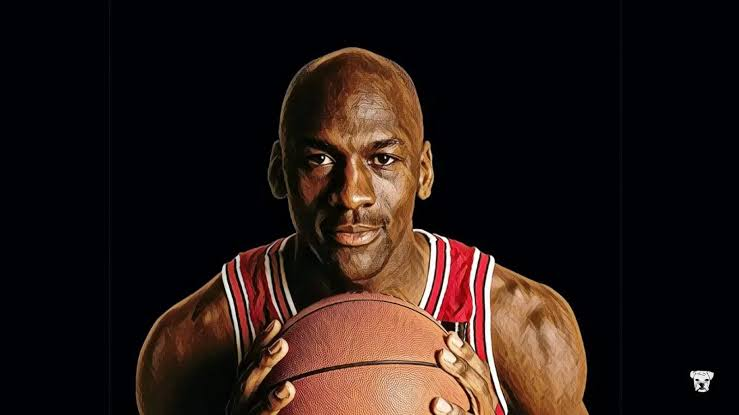
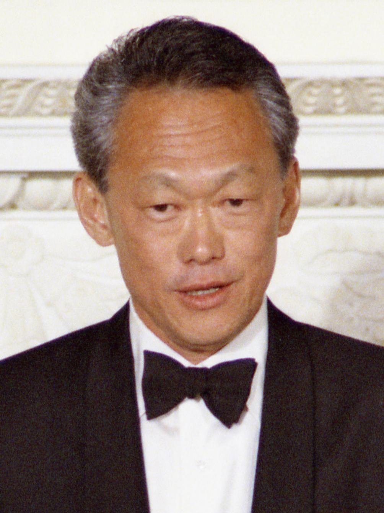
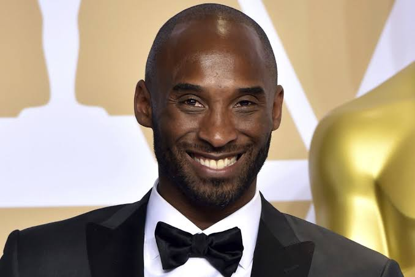

People I Follow
Here are some interesting people I follow and learn from:
People I learn from (alive)
Elon Musk
Electric cars, space exploration, boring commpany, AI. Elon could be the one of the greatest humans to ever live. I personally don't like his move of getting into free speech and politics, but maybe that's a way to get power and resources beyond a private organisation's scope.
Pavel Durov
He has a very contrarian way of running a company. Telegram is a 30 person company, perhaps the biggest and the most efficient lean startup in the world.
Peter Thiel
I can't process even reading about his optimism. The guy who built the first and The most successful startup mafia.

Michael Jordan
The definition of Obsession (My source of info is only the internet). He retired from basketball when he could become the first player ever to win 4 in a row. Who does that? Then returned after 2 years to become the first player to win 3 peats twice. What ?
People I learn from (not alive)

Lee Kuan Yew
Literally "built" Singapore. Their "Gandhi", just did not die a year after independence, but led for the next 50 years and took them to where Singapore is today. Controversial way of leading a country, arguably established autocracy, but the results speak for themselves. In fact, I favor autocracy (to an extent) if needed for unprecendented growth. Unfortunately, not possible in India.
Genghis Khan
I was surprised to learn that he lost most of his battles until he turned 40, and then went onto become The Genghis Khan.

Kobe Bryant
I believe he was arguably next to only MJ when it comes to obsession.